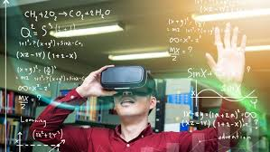

A jövő iskolája nagyon más lesz. A gyerekek otthon fognak tanulni VR-on keresztül, és csak akkor kell majd bemenniük az iskolába, amikor dolgozatot írnak vagy fontosabb gyakorlati órájuk van. A tanároknak nem kell majd rohangálniuk egyik teremből a másikba, hanem nyugodtan, online tudnak beszélgetni a diákokkal. A tanulás sokkal rugalmasabb lesz, mindenki a saját tempójában haladhat. Ha valaki gyorsabban ért meg egy anyagot, tovább tud lépni, ha pedig valakinek több idő kell, nem marad le. A VR segítségével az órák is érdekesebbek lesznek, például történelemből „bejárhatják” a régi városokat, biológiából pedig belenézhetnek az emberi testbe.
Készítette: Győző Dávid
